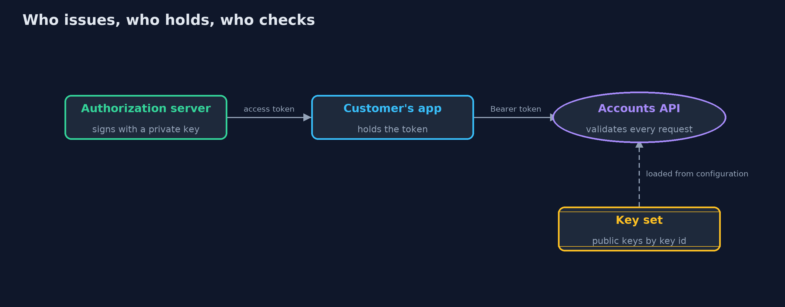
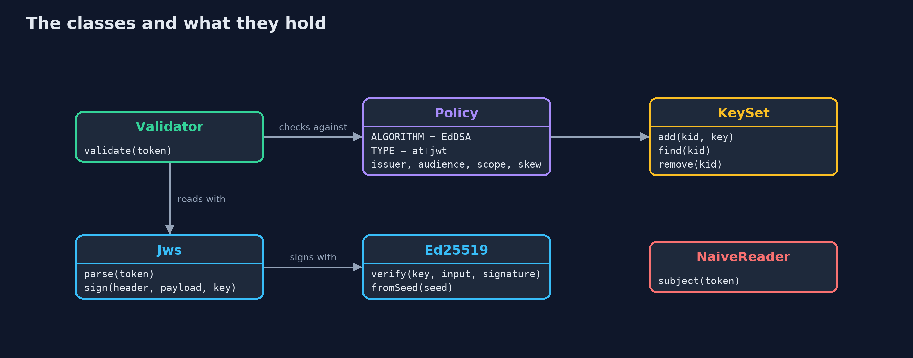
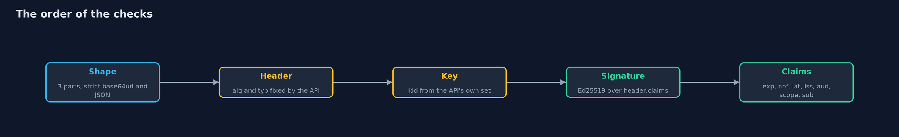
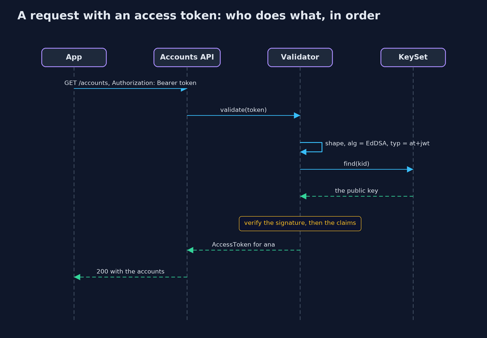

JWT Done Right
src/main/java/com/jk/explore/security/jwt/
├── AccessToken.java A token that passed every check: who it is for, what it allows, and when it stops working
├── Base64Url.java Base64url without padding, as JWS uses it (RFC 7515 section 2)
├── Ed25519.java Ed25519 keys and signatures with the JDK alone (RFC 8032, used in JOSE as "EdDSA", RFC 8037)
├── InvalidTokenException.java A token the validator refuses
├── Issuer.java The bank's authorization server, reduced to the part that signs access tokens
├── Json.java A small, strict JSON reader and writer for token headers and claims: objects, arrays, strings, integers, booleans and null
├── Jws.java The compact JWS form, header.payload.signature (RFC 7515 section 7.1), with Ed25519 signatures
├── JwtDemo.java Runs the online bank story in five numbered acts and prints exact, repeatable results
├── KeySet.java The public keys the bank's API trusts, by key id: the API's own copy of the authorization server's JWKS
├── NaiveReader.java What too many APIs do: split the token, decode the claims, check that it has not expired, and trust the subject
├── Policy.java What the bank's accounts API accepts
├── RefreshTokens.java Refresh tokens kept on the server
├── SimClock.java A clock in whole seconds that only moves when told, so expiry checks are exact and repeatable
└── Validator.java Validates the bank's access tokens, in this order: the shape, the algorithm and type the server expects, a key the server already holds, the signature, and only then the claims (expiry, not-before, issuer, audience, scope)
A JSON Web Token is only as trustworthy as the checks around it: the server fixes the algorithm and the type, picks the key from a set it already holds, verifies the signature, and only then believes expiry, issuer, audience and scope. And because a token cannot be taken back, it must not live long.
A JSON Web Token (JWT) is a set of claims (who it is for, who issued it, which API it is for, until when) in JSON, signed as a JWS (RFC 7515). Bank APIs and almost every OAuth 2.0 deployment carry their access tokens this way. The format is simple, and most of the damage comes from validators that check too little. RFC 8725, JSON Web Token Best Current Practices, lists the checks: let the server, not the token, choose the algorithm; verify the signature before believing anything; check the issuer, the audience and the expiry; type tokens explicitly so one kind cannot be used as another; and use keys the server already trusts.
This project maps to OWASP Top 10 (2025) A07 Authentication Failures; to CWE-347, improper verification of a cryptographic signature, CWE-345, insufficient verification of data authenticity, and CWE-613, insufficient session expiration; and to the self-contained tokens chapter of OWASP ASVS 5.0.
The demo builds a strict validator with the JDK alone, using Ed25519 signatures (EdDSA in JOSE, RFC 8037), and checks it against the example
token that RFC 8037 publishes. Each check a naive validator skips is shown as a token the naive reader believes and the validator refuses.
The idea in everyday terms
Think of a cinema ticket. Anyone can read what is printed on it: the film, the seat, the time. That is decoding. What makes it valid is the box office's stamp, checked by an usher who knows what the stamp looks like, and who also checks that it is for this cinema, this film and tonight. An usher who lets in anyone holding a piece of paper with a film name on it has decoded the ticket and verified nothing. And a ticket cannot be taken back once sold, which is why it is only good for one evening.
The scenario
An online bank's authorization server issues access tokens for its accounts API. The demo reads one token, forges and alters others, rotates the bank's signing key, and removes a customer's access, and shows for each what a naive reader believes and what the strict validator does.
Run
./gradlew run
The demo tells the story in 5 acts, each printing exact numbers that the tests check:
| Act | What it shows |
|---|---|
| 1. Three parts, and decoding is not verifying | A bank access token is a header, claims and a 64-byte Ed25519 signature; anyone can read the claims, and a reader that only decodes believes claims edited to sub=mallory, which the validator refuses. |
| 2. The server chooses the algorithm, never the token | The RFC 8037 example verifies and re-signs exactly; Ana's token is accepted; a header saying none, a header saying HS256 and a correctly signed token of another type are all refused. |
| 3. Every claim that matters is checked | Accepted at issue and 20 seconds after expiry within the 30-second skew, refused 30 seconds after; refused before its start time, from another issuer, for another audience, and without the required scope. |
| 4. Keys by id, from a set the API already holds | During a changeover two keys are trusted and tokens from both work; after the old key is retired its token is refused; an unknown key id and a forged signature under the bank's key id are refused, and nothing is fetched. |
| 5. The bill: a token cannot be taken back | Two minutes after Ana's access is removed her access token still works, while her server-side refresh token is refused; the access token stops at five and a half minutes, and a fifteen-minute cap refuses longer lifetimes. |
Test
./gradlew test
38 tests in DemoRunsTest, JsonAndBase64UrlTest, KeysTest, NaiveReaderTest, RefreshTokensTest, Rfc8037Test, ValidatorTest. The Ed25519 code is checked against RFC 8037 appendix A: the published token verifies, signing its input gives the published signature, and the published public key is derived from the published private key. Every refusal is a test with its exact reason.
What the simulation got right, and what it left out
Everything runs in memory with a simulated clock in whole seconds. Ed25519 signatures are deterministic, so the same key and claims always give the same token, and the demo prints exact tokens. The bank's first signing key is the RFC 8037 test key, so its signatures can be checked by anyone; the other keys come from fixed seeds and protect nothing. No key is ever fetched over a network.
Technologies and versions
Every version below is pinned in the project's build files and was the latest stable release when the project was built.
| Technology | Version | Used for |
|---|---|---|
| Java | 25 | the language and runtime; a Gradle toolchain finds or downloads the JDK |
| Gradle | 9.8.1 (wrapper) | build and run; nothing to install, the wrapper downloads it |
| org.junit.jupiter:junit-jupiter | 6.1.3, set by junit-bom | JUnit 5: the tests (tests only) |
| org.junit.platform:junit-platform-launcher | 6.1.3, set by junit-bom | JUnit platform launcher, which Gradle needs to run the tests (tests only) |
| videokit | repository tool (tools/videokit) |
the narrated video and animation: Piper en_US-amy-medium, speed 0.8, longer pauses (the amy-slow voice) |
Learning Material
| Document | What it is for |
|---|---|
| Problem statement | the situation and what the project must show |
| Prerequisites | what you need to know first |
| JWT Done Right, explained | the acts in prose |
| Session guide | a one-hour lesson with exercises |
| Animated walkthrough | the acts step by step, narrated |
| Threat model | what is protected, who could harm it, and how, using STRIDE |
| Spec | what this project must be true of |
| Expected output | the golden demo output every test and every port checks against |
The idea in one picture
The token travels through the customer's hands, so the API checks every part of it against its own settings and keys.

Where each piece sits
The validator reads the token with Jws and Json, chooses a key from KeySet, and checks everything against Policy.

How the data moves
Nothing in the claims is believed until the signature has been checked with a key the API already holds.

Who calls whom, in order

Video
video/jwt-done-right-explained.mp4 (with .m4a audio and .srt subtitles) is built by video/build_video.sh. Rendered media is not committed.
What it costs
- A token cannot be taken back. Until it expires, an access token works even after the customer's access is removed. Keep lifetimes to minutes, and keep refresh tokens on the server, where they can be revoked.
- Clock skew is a trade-off. Servers' clocks differ, so a few seconds of leeway are needed; every second of leeway is a second an expired token still works.
- Keys need operations. A key set must be updated before a new key is used and kept until the last token signed with the old key has expired.
- Claims are readable by anyone. A JWS is signed, not encrypted: never put secrets or personal data in it that the holder should not see.
- A hand-written validator is for learning. Production code should use a maintained library configured as strictly as this one; see the
-with-nimbus-jose-jwtversion.
When this is too much
For a single application with server-side sessions, a JWT adds nothing but risk: a session cookie is simpler and can be revoked at once. JWTs earn their place when an API must check a token without calling the server that issued it, which is the usual case for OAuth 2.0 access tokens.
Where you have already met this
Authorization: Bearer eyJ...headers in API calls; every token starting witheyJis base64url of{".- OAuth 2.0 and OpenID Connect providers such as Keycloak, and their
/.well-known/jwks.jsonkey sets. - Debugging sites that decode a JWT: they show the claims without checking anything, which is exactly the point of act one.
- Advisories about
alg: noneand algorithm confusion in JWT libraries.
Where this sits
This is the first project of identity-and-access in the intermediate track. It builds on the beginner projects digital-signatures and authentication-vs-authorization.